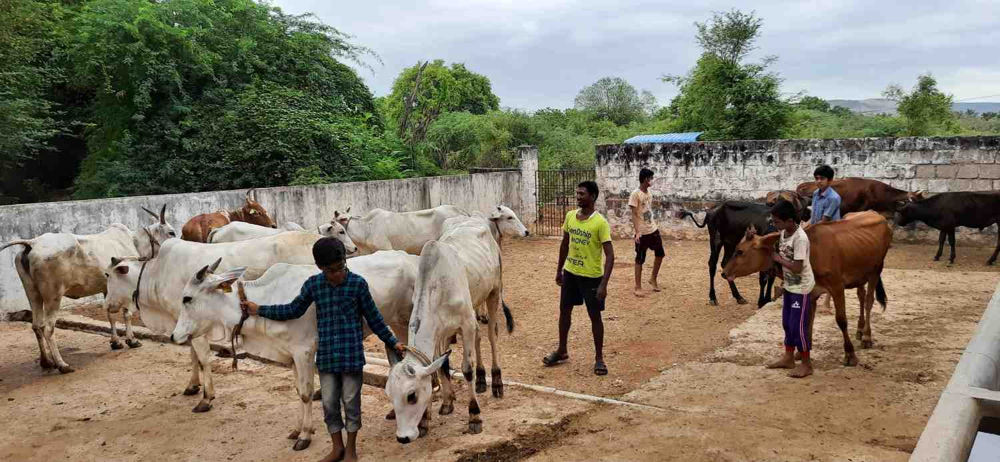
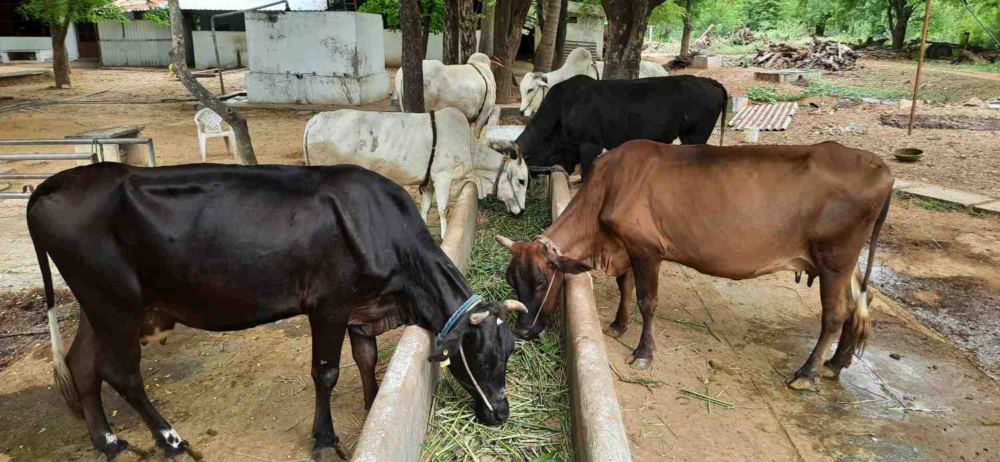
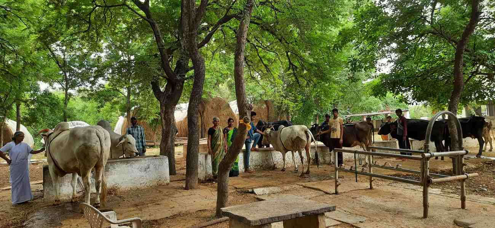
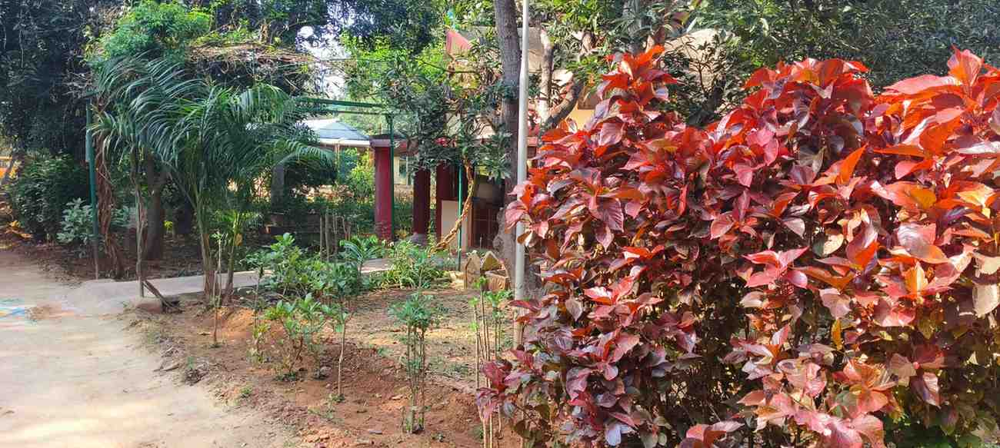
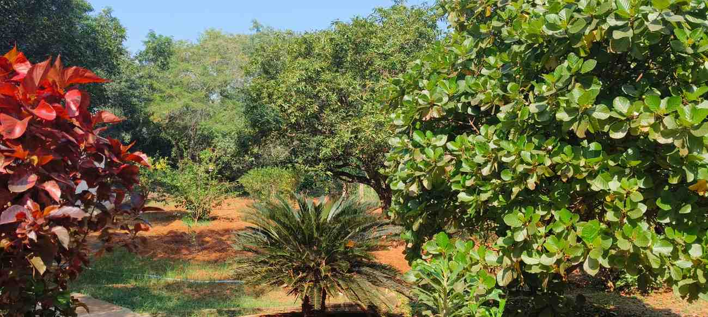

Seva Activities
• • •Satya Kama Mandir (S.K.M.)
In October 1982, Pujya Mataji started a home for destitute children when two abandoned children from a hospital were brought to Chinmayaranyam with all affection and concern. A hostel was started for their sake, and slowly the number grew.
S.K.M. gives new life to many children, providing free education, food, books, and medical care. The uniqueness of S.K.M. is that the children are brought up in an atmosphere of the ancient Gurukula system.
Currently supporting 42 poor & destitute children
College Education
The Ashram supports college education up to graduation or post-graduation for poor children who pass their exams in first division, empowering them to build a better future.
Annadanam
Free food distribution to devotees, pilgrims, and the needy is conducted daily. Thousands of meals are served every month as a sacred offering, embodying "Anna Daanam Maha Daanam."
Go-Seva
In Hindu culture, three crores of Gods reside in the holy body of a cow. Starting with two cows and two bulls in an old thatched shed, the herd has now grown to 35 with a pucca cattle shed and all amenities.
Go-Seva — Our Go-Shala
• • •The Go-Shala at Chinmayaranyam houses a total of 34 cows with 2 bulls. Starting humbly with two cows and two bulls in an old thatched shed, it has grown into a well-maintained cattle shed with all amenities, embodying our reverence for the sacred cow.

34 cows with 2 bulls at the Go-Shala, Chinmayaranyam

Milk-giving cows with two bulls

Two oxen with milk-giving cows
Photo Gallery
• • •


Support the Ashram's Seva Activities
Your generous contributions help sustain Annadanam, Go-Seva, and support for destitute children at Satya Kama Mandir.
Contribute Now